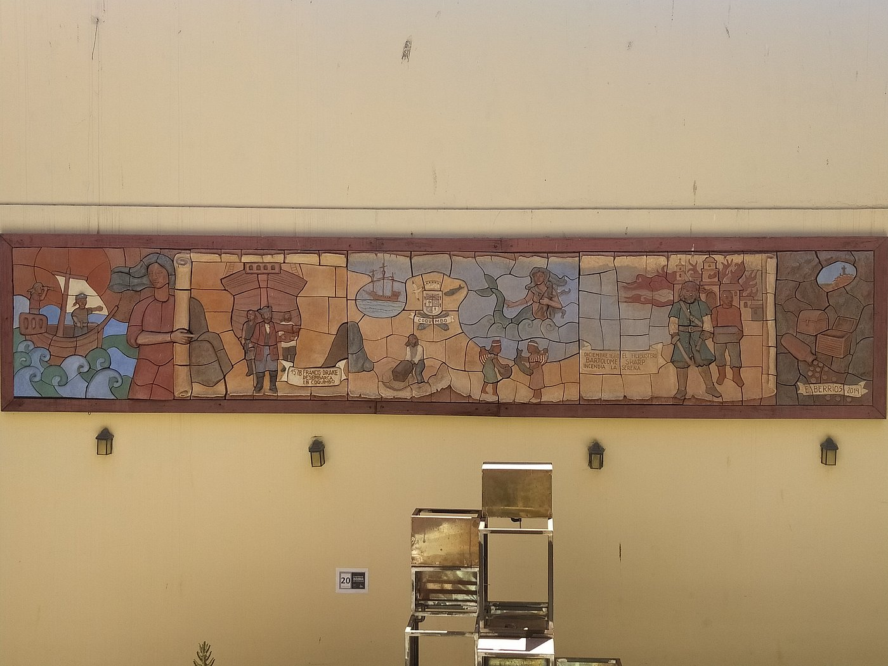

Centro Cultural Puerto Abierto
Ubicado estratégicamente frente al mar en una antigua bodega portuaria de ladrillo visto y vigas de acero recuperadas, el Centro Cultural Puerto Abierto nace como un espacio de encuentro donde la brisa marina dialoga con las artes, el pensamiento crítico y la memoria de la costa. Concebido no solo como un recinto de exhibición, sino como un verdadero muelle de intercambio cultural, nuestro proyecto busca abrir las compuertas de la creatividad hacia la comunidad, convirtiendo el borde costero en un territorio vivo de experimentación y convivencia.


Nuestro edificio combina la robustez de la arquitectura industrial marítima con la transparencia de grandes ventanales abiertos al horizonte, generando un refugio cálido y luminoso que invita a detenerse, contemplar y crear. Creemos que la cultura es el mejor puerto seguro para navegar los tiempos actuales, un espacio donde todas las voces encuentran calado y rumbo.
Nuestras Actividades
Nuestra programación es permanente, diversa y transversal, pensada para reflejar las múltiples identidades, inquietudes y expresiones del mundo actual. A través de una oferta integral, nos estructuramos en torno a los siguientes pilares:
Salas de Exposición
Contamos con espacios galerísticos de gran formato que albergan exposiciones temporales de artistas nacionales e internacionales de renombre, abarcando desde vanguardias históricas hasta fotografía documental.
Cineteca Nacional
Dedicada a la preservación y difusión del patrimonio audiovisual. Ofrecemos funciones diarias de cine independiente, ciclos temáticos, estrenos nacionales y muestras internacionales.
Programas Públicos
Diseñamos experiencias de aprendizaje significativas para todo tipo de públicos. Incluye visitas guiadas mediadas, recorridos patrimoniales y conversatorios abiertos con creadores.
Talleres de Creación
Un espacio activo de formación artística y oficios. Impartimos cursos prácticos y seminarios en artes visuales, fotografía analógica, literatura, danza y teatro contemporáneo.
Gastronomía e Identidad
Promovemos la valorización del patrimonio culinario mediante talleres de cocina ancestral, seminarios de gastronomía sustentable, rutas temáticas y degustaciones de productos locales.
Ediciones Independientes
Plataformas de visibilización y comercialización para creadores gráficos, editoriales independientes, artesanos y colectivos culturales, impulsando la economía creativa local.
Actividades destacadas
Recorridos
Explora la memoria viva de nuestra costa a través de caminatas guiadas por antiguos barrios portuarios, mercados tradicionales y rincones icónicos. Un viaje a pie para redescubrir el patrimonio arquitectónico y humano que da vida a nuestro entorno.
DescubrirOfertas Gastronómicas
Una propuesta culinaria que rinde homenaje a la cocina marina y de estación. Encuentra desde degustaciones artesanales y cocina de autor hasta talleres gastronómicos que rescatan recetas ancestrales y productos locales de la zona.
DescubrirFeria de Diseño y Arte
Un escaparate abierto para ilustradores, artesanos, diseñadores independientes y creadores locales. Ven a conocer y apoyar el talento regional en una feria llena de objetos únicos, arte gráfico, encuadernación y diseño sustentable.
Descubrir
Cartelera de Actividades
Explora nuestra programación completa de talleres, conciertos, exposiciones y ciclos de cine al aire libre. Hay una experiencia esperando por ti frente al mar.
Inscripciones
Nuestros talleres y encuentros cuentan con cupos limitados para garantizar una experiencia cercana y personalizada. Revisa los requisitos, elige tu actividad favorita y completa el formulario en menos de dos minutos. ¡El arte y la comunidad se construyen entre todos!